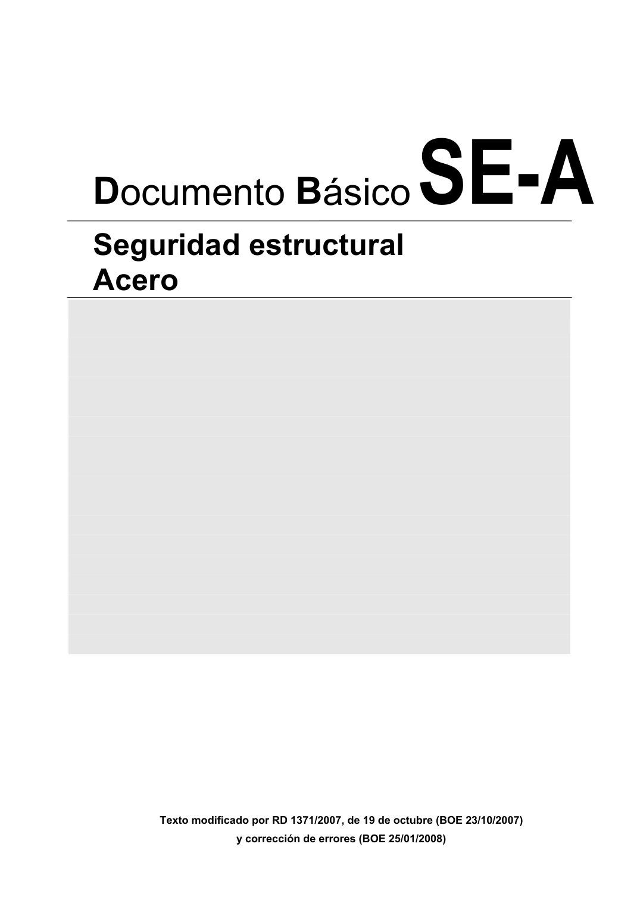

DB-SE-A · Fragmento de PDF p1 · versión 2007-10-23 · capa oficial
Formatos: JSON compacto · Markdown · PDF fuente
Ámbito del documento · texto del ámbito · documento y tablas
ID técnico a0001 · PDF pág. 1 · jerarquía no validada por persona · no es capítulo: fragmento_portada · padre: raíz · literal original en el contenido: «Portada y páginas previas»
Texto modificado por RD 1371/2007, de 19 de octubre (BOE 23/10/2007) y corrección de errores (BOE 25/01/2008)

PDF fuente redistribuible: copia fiel enlazada en esta página (SHA256 verificado).